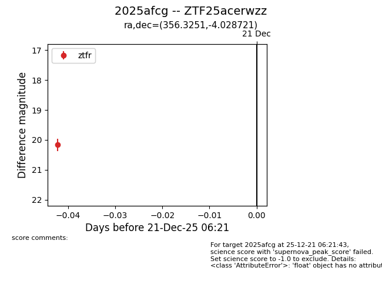
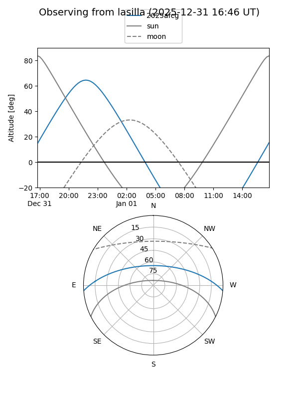

2025afcg
Target 2025afcg at 2025-12-23 06:23
Aliases and brokers:
FINK: fink-portal.org/ZTF25acerwzz
Lasair: lasair-ztf.lsst.ac.uk/objects/ZTF25acerwzz
ALeRCE: alerce.online/object/ZTF25acerwzz
TNS: wis-tns.org/object/2025afcg
YSE: ziggy.ucolick.org/yse/transient_detail/2025afcg
alt names
ZTF25acerwzz (ztf,fink_ztf)
2025afcg (tns,yse)
Coordinates:
equatorial (ra, dec) = 356.3251,-4.02872
equatorial (HMS+DMS) = 23:45:18.04,-04:01:43.40
galactic (l, b) = (85.6961,-62.02033)
Flags:
Photometry:
last ztfr=20.17
1 ztfr detections
Lightcurve

Visibility


Additional plots